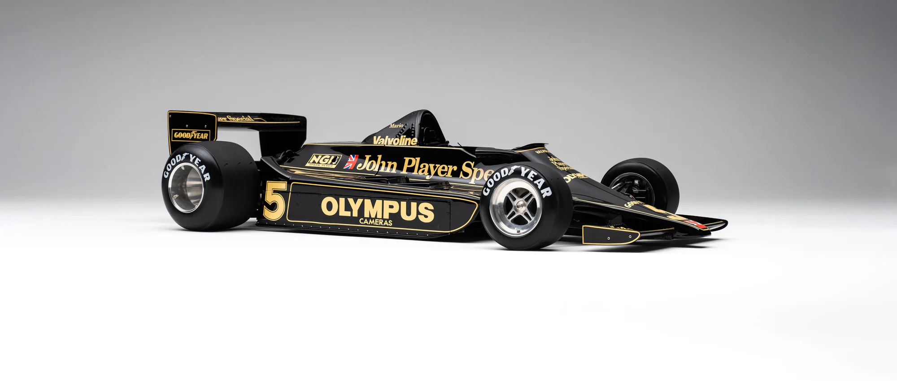

¿Quienes Somos?
Este proyecto es una vitrina digital desarrollada para la materia Aplicaciones Web Cliente. El objetivo es ofrecer una experiencia visual y técnica sobre la evolución de la Fórmula 1, utilizando como base modelos a escala de alta fidelidad. El catálogo permite explorar la ingeniería de los monoplazas, desde la simplicidad mecánica de los años 50 hasta la complejidad aerodinámica de la actualidad, destacando hitos como el Lotus 79 o el McLaren MP4/4.